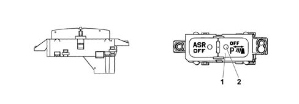
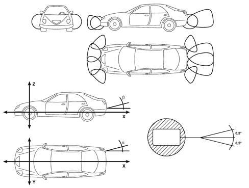

ULTRASOUND PARKING DETECTION SYSTEM
- Path
- Descriptions > 55 ELECTRICAL EQUIPMENT > 5580 SPECIAL ACCESSORIES > ULTRASOUND PARKING DETECTION SYSTEM
- Kind
- system description
- Applies to
- all engines; all production periods
- Interactive page
- https://sloeber94.github.io/elrnDB-lThss/en/#/201586
Applies to: all engines; all production periods
Specifications
The Parking Assistance system provides the driver with distance information when approaching objects in front of or behind the vehicle. The system provides help with parking manoeuvres because it allows the identification of obstacles outside of the driver's range of vision.
The information of the presence/distance of an obstacle is transmitted to the driver by means of acoustic warnings whose frequency depends on the distance of the obstacle.
Combining the direct visual information with the acoustic information produced by the system, the driver can avoid possible collisions.
COMPOSITION
The parking assistance sytem designed for the Lancia 841 consists of the following components:
- an electronic control unit (see Parking Sensor Node)
- 8 ultrasound sensors
- 2 Covers (front side)
- 2 Covers (front centre)
- 2 Covers (rear centre)
- 2 Covers (rear side)
All the control unit input and output is protected against battery voltage and earth short circuits.
Ultrasound sensors
The sensor is an ultrasound transducer which acts as an intelligent transmitter and receiver of ultrasound impulse packages. Both the frequency and the voltage of the impulses are produced in the transducer.
Each sensor can also be operated as a receiver only, in order to be able to take a triangular measurement between two sensors. This technique allows better detection of small obstacles and in situations featuring critical reflection.
The sensors all have the same electrical and mechanical properties; the maximum detection distance for each sensor can be adjusted using software according to the location of the actual sensor.
The sensor supply is protected by an electronic fuse. The sensors are also equipped with hermetic connectors.
CAN
The maximum permitted delay between the generation of CAN messages by the control unit and the corresponding emission of warning signals is 30 ms.
CAN input signals:
- Vehicle speed,
- Reverse gear engaged,
- Outside temperature.
CAN output signals:
- Acoustic warnings via the front/rear, left/right speakers,
- Front sensors deactivated.
Discreet connections
The control unit has the following discreet connections:
- Trailer,
- Deactivation button,
- +12 V nominal supply (controlled by the ignition),
- Connections to front/rear sensors,
- Status LED.
OPERATION
When the control unit is switched on (vehicle key-on) an autodiagnostic test and a test on all the peripheral functions are carried out. The system is ready to use in under 0.5 seconds.
The distance measurement only takes place when the system is activated, whilst only the control unit microcontroller is operational in the inactive state.
There is a switch for deactivating the front sensors. The deactivation button contains a status LED and a light LED; the electronic control unit only operates the status LED. When the front sensors are activated, the status LED is off; when the front sensors are deactivated, the status LED is on. This deactivation is also signalled in the instrument panel.
The front distance measurement starts when the status LED is off.

- 1 - Front parking sensor activation/deactivation button
- 2 - Front parking sensor activation/deactivation LED
Front sensors
The front sensors are activated in the following conditions:
- key ON,
- vehicle speed below 15 km/h,
- reverse gear engaged or system deactivation button OFF.
The front speakers start to transmit the warning as soon as an obstacle is detected and the frequency of the impulses increases as the obstacle gets nearer.
Rear sensors
The rear sensors are activated in the following conditions:
- key ON,
- reverse gear engaged.
- The rear speakers start to transmit the warning as soon as an obstacle is detected and the frequency of the impulses increases as the obstacle gets nearer.
Measuring distance of obstacles
The electronic control unti determines the timing of the measurements; it controls the sensors which converter the control unit electrical signals into ultrasound signals at a rhythm of 10 measuring processes per second.
The signal, reflected by any obstacles, is received by the sensor and amplified by it, converted into a digital signal and sent, in this format, to the electronic control unit.
The control unit compares the signal transmitted with the one rececived and, using suitable algorhythms, calculates the time elapsed between the issue of the signal and the reception of the echo (flight time). This information is translated into distance and the driver is notified by means of acoustic signals.
The flight time is measured using the control unit clock frequency. It contains a counter with the value recorded at both the start of the measurement and when the echo signal is received. The difference between these two values is equal to the time taken by the impulses to reach the obstacle and return. As the speed of sound is known, it is possible to calculate the distance of the obstacle from this measurement. The accuracy of the measurement is ± 1 cm.
There are dedicated counter recordings for each sensor.
Each measuring cycle involves checking that the entire system is working properly. If the echo signal is not interfered with, the flight time between the signals for all the sensors is shorter. A comparison with the previous measurements makes it possible to establish whether the obstacle is closer or further away.
The position and type of obstacle is obtained from each measurement taken and from the distance between the sensors. Using this information the actual distance is determined with greater accuracy in critical conditions.
Reflections from the ground are ignored unless they have the characteristcs of an obstacle.
Obstacle distance signal
The control unit processes the information supplied by the 4 front sensors and the 4 rear sensors, operating the front and rear audio system speakers, respectively, irrespective of whether the audio system is ON/OFF. Depending on the position of the obstacle (to the right - in the centre - to the left) the sound is emitted by the respective speakers (right - both - left).
During the warning signals, the programme which may be in the process of being transmitted via the audio system is muted.
The sound from the speakers warns the driver that the vehicle is approaching an obstacle. The sound lasts for 75 ms, whilst the pause between the sounds is directly proportional to the distance of the obstacle: impulses in quick succession indicate the presence of an obstacle that is very close. A continuous sound indicates that the obstacle is less than 30 cm away.
The acoustic signal stops immediately if the distance of the obstacle increases. The sound cycle remains constant if the distance measured by the centre sensors remains unchanged, whilst if this situation occurs for the side sensors, the signal is interrupted after 3 seconds (for example, to prevent signals in the case of manoeuvres alongside walls).
If there is a trailer then there is no signalling of rear obstacles.
The table below summarizes the acoustic signals.
SIGNAL | WHEN | HOW |
|---|---|---|
Obstacle distance | Presence of obstacle in the range of the system | Buzzer: |
- Acoustic impulses with increasing frequency whilst getting closer to the obstacle | ||
- Frequency: 800 Hz rear ¿ 1000 Hz front | ||
- Impulse duration: 75 ms | ||
- Max interval between two impulses (first approach distance): 400 ms | ||
- Min interval between two impulses (second approach distance): 25 ms | ||
- Continuous sound at 30 cm | ||
- "Constant distance" signal duration for side sensors: 3 s | ||
Errors signal
Any faults/errors are signalled by means of the instrument panel both visually and acoustically.
The acoustic signal stops after a maximum of 3 seconds.
The occurrence of errors/faults whilst the system is activated is signalled immediately.
Installation notes
The flow of sound waves (ultrasound) produced/received by the sensors should not be obstructed. Therefore:
- The sensors should not be recessed,
- Any bumper or bodywork angles or projections should be kept to a minimum,
- Tow hooks, bicycle holders or similar accessories should not interfere with the operating radius of the sensors.
Positioning the sensors
The system covers the middle and side areas at the front and the rear of the vehicle with a performance that differs thanks to the detection area programmed.
In the case of an obstacle in the middle area, it is detected at distances of less than 1.50 m (rear) or 1 m (front).
In the case of an obstacle in the side area, it is detected at distances of less than 0.6 m.
Conventional sensors should be positioned between 350 and 600 mm from the ground; if circular diaphragm sensors are used, the minimum height for positioning these sensors with the vehicle fully laden is 280 mm.
The horizontal fitting angle is about 7°.
For optimum operation, the maximum angle error when positioning the sensor should be less than ± 0.5°.
These sensors must be positioned so that the front and rear sections of the vehicle are completely covered.
The sensors are incorporated in the bumper using special adaptors (covers).

Recovery strategies
The system should be capable of automatically diagnosing any errors that occur during operation.
If the fault does not significantly adversely affect the overall operation of the system, it will continue to operate. If the fault is serious and adversely affects the operation of the system or the reliability of the performance, the system switches itself off and sends a failure message via the CAN.
Any faults are recorded according to their type and frequency; this information can be read through the CAN diagnostic functions.
SENSOR PIN OUT
Pin | Function |
|---|---|
1 | Sensor supply voltage |
2 | Sensor signal |
3 | Earth |